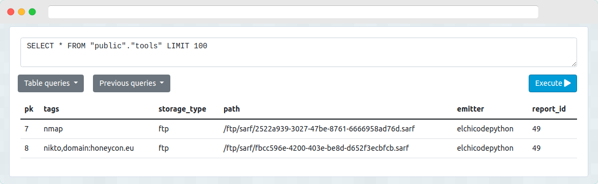

Database listeners¶
Postgresql Tools¶
This listener retrieve messages from SARF tools and write them into a Postgresql table.

Installation¶
pip install sarf_postgres_tools
Configuration¶
Configuration should be added inside /etc/sarf.config.yml.
listeners:
loglevel: 10
logfile: /var/log/sarf/listeners.log
# Specific postgres_tools listener configuration
postgres_tools:
host:
port: 5432
database:
table:
user:
password:
datamap:
# key in message: column in database
tags: tags
emitter: emitter
storage_type: storage_type
path: path
report_id: report_id